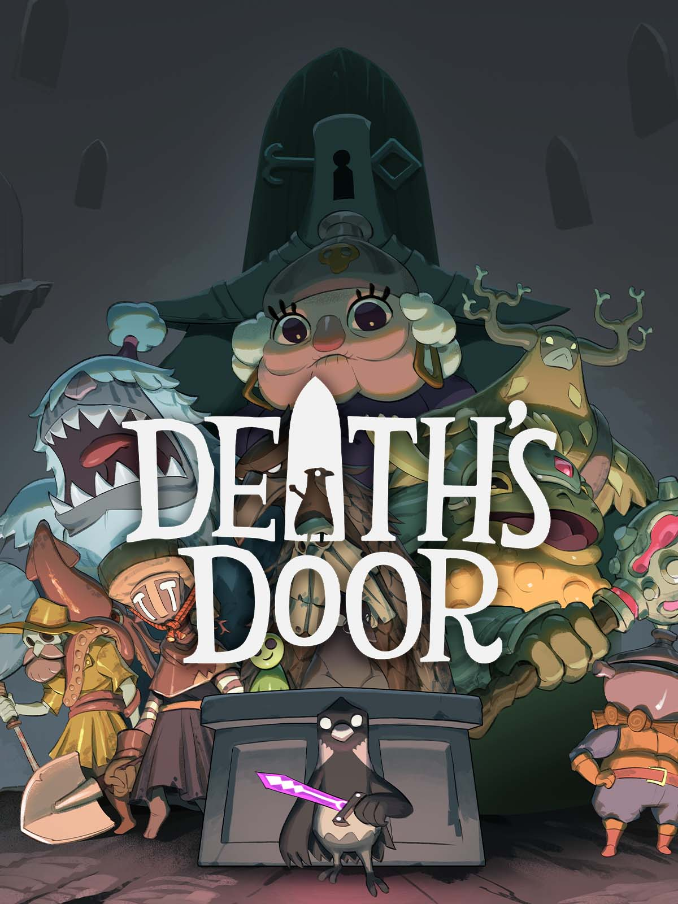
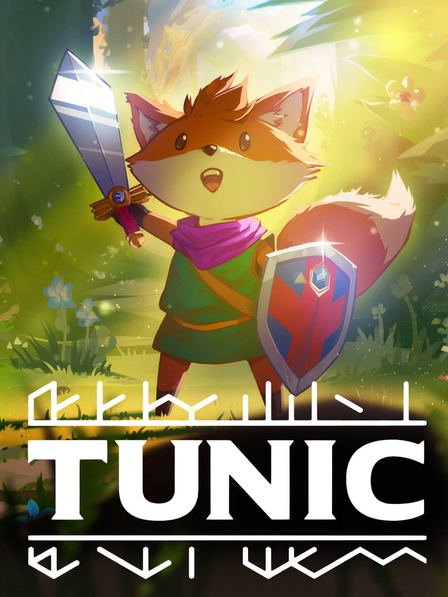
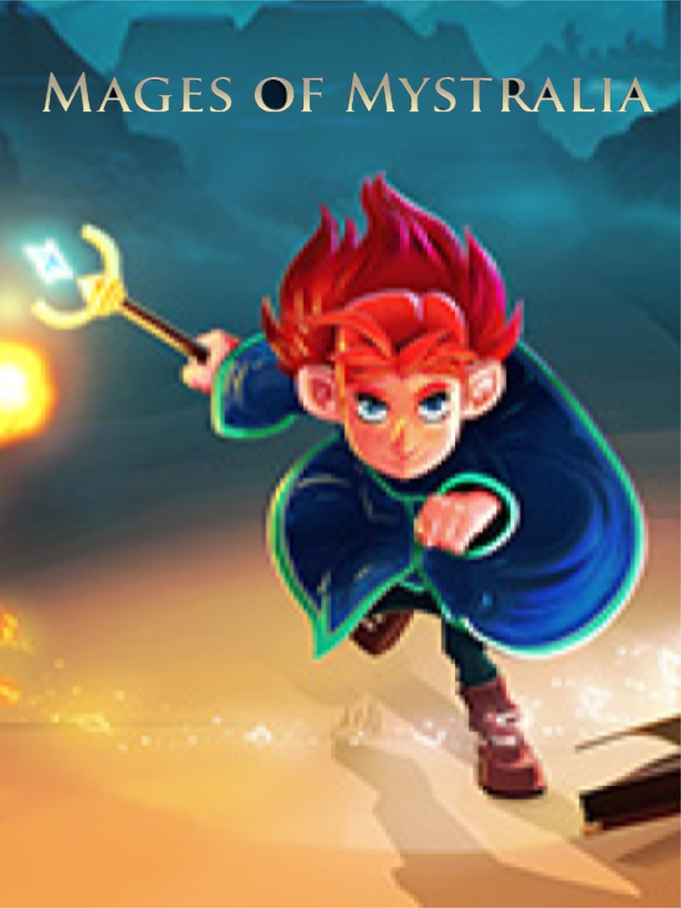

Death's Door
Développé par Acid Nerve et publié en 2021.
Death's Door est un jeu action aventure 3D en vue isométrique où l'on joue le rôle d'un corbeau bipède qui travaille en tant que faucheur d'ames.
Rien de gore ou terrifiant, simplement le cycle de la vie, car dans ce monde pour qu'il y ai de nouvelle naissance il faut que l'on cède sa place un jour.
Quand j'ai lancé le jeu pour la première fois c'était principalement pour le fait qu'on joue un oiseaux!
Ce qui m'as fais accrocher c'est la rencontre avec le fossoyeur, on apprend qu'il est condamné à la vie éternelle.
Malgré son destin il respecte chaque créature qui passe de vie à trépa car chacune d'entre elle représente un positif pour quelqu'un.

TUNIC
Sortie en 2022 et développé par Isometricorp Games
TUNIC est lui aussi un jeu action aventure 3D en vue isométrique, cette fois ci on prends le rôle d'un petit renard bipède qui viens de se réveiller sur une plage sans objectifs ni mémoire
TUNIC embrasse fortement l'aspect metroidbrainia, l'entièreté du jeu est "débloqué" dès le premier lancement du jeu.
Pas besoin d'arme spéciale, de capcité magique ou autre objet qui débloqurais une partie du monde. Tout se fait uniquement en essayant de comprendre le monde dans lequel on attéri.
Pour seul guide le jeu nous donne un manuel d'instructions écrit dans une langue propre au jeu. Et pour avancer il faudras (au moins en partie) déchiffrer ce manuel
Honnetement je ne sais pas par où commencer, TUNIC as fondamentalement changé ma manière de jouer et d'expériencer d'autre jeu.
Je ne sauras pas dire ce que j'ai préféré entre le déchiffrage du manuel, les puzzles intégré dans le monde ou même les musique qui nous donne l'impression de rêver et de nous perdre nous-même dans ce monde inconnu.

Mages Of Mystralia
Un jeu du studio Borealys Games sortie en 2017
Mages Of Mystralia nous fais suivre Zia, une jeune mage éxilée de son village car, depuis les nouvelles lois en rigueur, les mages sont banni du royaume et y sont énemie public numéro 1!
Zia trouve donc refuge acceuilli par un groupe de mages vivant dissimulé dans la forêt du temps qu'elle apprenne à maitriser ses pouvoirs.
Ce jeu est vraiment unique en son genre niveau gameplay. Là où dans un jeu avec de la magie on as un arbre de compétences, ou des armes qui on des sorts différent ou juste simplement des capacitées à améliorer.
Dans Mages Of Mystralia il n'y as que 4 sorts du début à la fin. Pour progresser il va falloir faire preuve d'ingéniosité car les 4 sort à notre dispositions peuvent être modifé avec des runes qui se connectent entre elles et viennent se modifié les unes les autres.
Dans un sens on peut voir ce jeu un peu comme un programming-game où on programmes ses propres sorts pour résoudre des puzzle et mieux se défendre.
